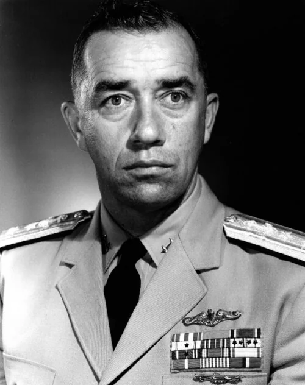
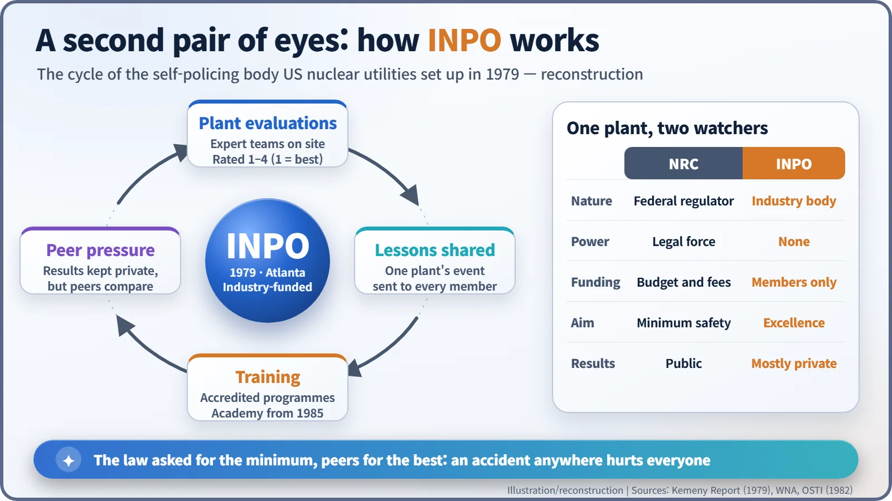
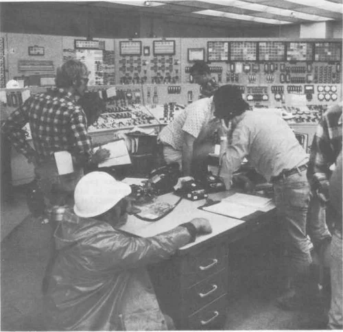
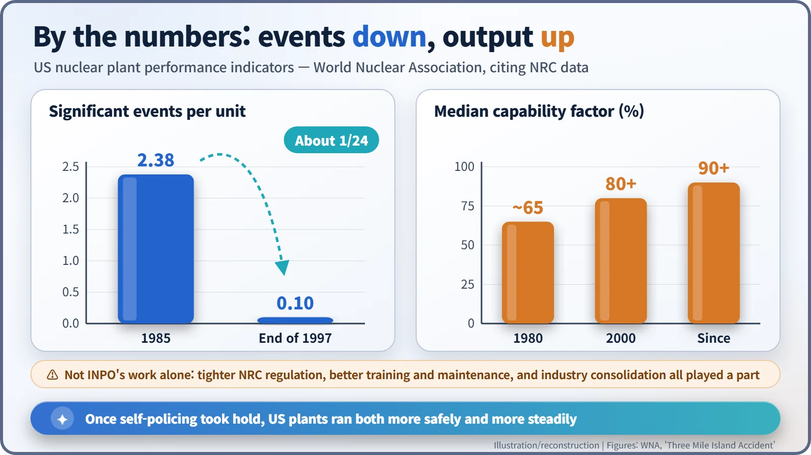

Nuclear History · 253
Roped Together on the Mountain — INPO, the Body US Nuclear Utilities Created to Police Themselves (1979)
With no legal powers, a body funded by rival utilities used private ratings and peer pressure to raise the bar for US nuclear plants.
After the Three Mile Island accident of March 1979, America's nuclear utilities created the Institute of Nuclear Power Operations (INPO), a non-profit body they fund themselves to evaluate their plants, share lessons from incidents and accredit operator training. It has no legal powers, yet peer pressure among rivals made it one of the most influential safety institutions in the industry.
Someone else's accident becomes yours
Climbers on a high glacier tie themselves to a single rope: if one falls into a crevasse, everyone is pulled towards the edge. In the winter of 1979 the owners of America's nuclear power plants tied themselves to a rope of their own.
On 28 March 1979 the core of Unit 2 at Three Mile Island (TMI-2) in Pennsylvania partly melted. The radiation doses received by people nearby were very small, but the damage did not stay at one plant. Every nuclear utility in the country shared the public's suspicion and the investors' unease. One company's reactor had shown that it could shake the future of the whole industry.
The industry answered within the year. Utilities agreed to pay for an independent, non-profit organisation devoted only to the safe operation of their plants. INPO has no legal powers: licensing and enforcement remain the job of the federal Nuclear Regulatory Commission (NRC). What INPO aimed at was not the legal minimum but "excellence". [3]
Which came first, the commission or the industry?
It is often said that the Kemeny Commission created INPO. The order of events was a little different. The president's commission on the accident delivered its report on 30 October 1979. It said that "the industry must also set and police its own standards of excellence to ensure the effective management and safe operation of nuclear power plants", and added: "The recently created Institute of Nuclear Power Operations, or some similar organization, may be an appropriate vehicle for establishing and implementing this program." The industry's plan was already moving; the commission gave it official backing. [1]
Sources differ slightly on the founding date: the industry's trade association history says October 1979, while INPO's own history gives December 1979. The institute set up its headquarters in Atlanta, Georgia, and its members pay all of its costs. [2]
A submarine captain's discipline
INPO's first president, from 1980, was Eugene P. Wilkinson (1918–2013), a retired US Navy vice admiral and the first commanding officer of USS Nautilus, the world's first nuclear-powered submarine. Naval reactor operation was known for following procedures to the letter and reporting even small problems. Wilkinson served until 1984 and, in the words of the National Academy of Engineering, "oversaw the creation of inspection and regulation criteria and protocols for the safe and reliable operation of commercial nuclear power plants." [4]

Evaluate, share, train
INPO's work runs along three lines:
- Evaluations: teams of experts visit each plant, evaluate how it is run and give an overall rating from 1 to 4, with 1 the best.
- Shared experience: events at any one plant, and the warning signs that came before them, are analysed and passed on to every member.
- Training: INPO accredits operator training programmes; in 1985 the National Academy for Nuclear Training was established under its auspices.

Hostages of each other
Evaluation results are, as a rule, not made public. The system runs on comparison and pressure among peers rather than public shaming. In 1994 the legal scholar Joseph V. Rees gave his study of this arrangement the title Hostages of Each Other. His publisher describes the book as "detailing the surprising success of self-regulation within the nuclear industry", achieved through community pressure. [5]

What the numbers say
According to the World Nuclear Association (WNA), citing NRC data, significant events at US plants fell from 2.38 per reactor unit in 1985 to 0.10 at the end of 1997. The median capability factor, the share of a plant's maximum possible output that it can actually deliver, rose from about 65% in 1980 to over 80% in 2000, and has been above 90% since. TMI's own operator training programme went on to pass three INPO accreditation reviews. [2]

Credit, and its limits
These gains cannot be credited to INPO alone. Tighter NRC regulation after TMI, better training and maintenance, and consolidation in the industry all played a part. Critics have also argued that a body funded by the industry, keeping its findings private, lacks transparency; supporters reply that confidentiality is exactly what allows evaluators to be blunt. And some problems slipped past both regulators and peers, such as the severe corrosion found in the reactor vessel head at Davis-Besse in 2002.
The unfinished E
According to a story often told, the lobby of INPO's Atlanta headquarters holds a marble pedestal carved with the word EXCELLENCE, its final E left unfinished on purpose, because excellence is never complete. Whether or not the story is true, the principle behind the institute is clear: rival companies still share safety information, because an accident anywhere is an accident for everyone. Ten years later, after Chernobyl, the same idea crossed borders and became a worldwide association of nuclear operators.